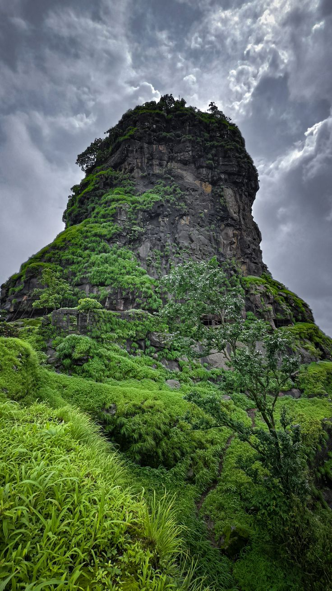
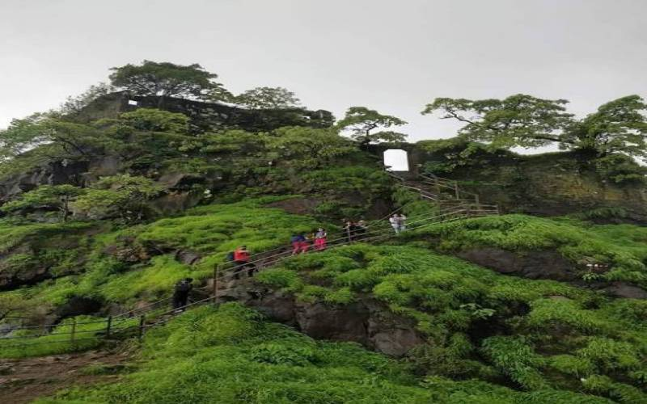
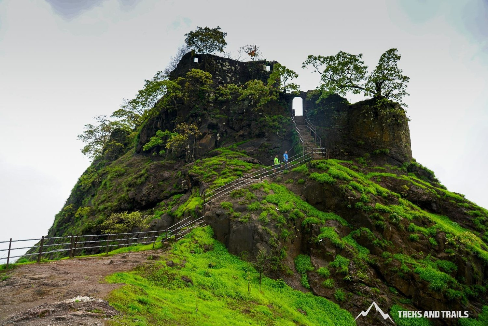

कर्नाळा किल्ला हा महाराष्ट्रातील एक प्रसिद्ध ऐतिहासिक किल्ला आहे.
हा किल्ला रायगड जिल्ह्यात पनवेल जवळ कर्नाळा पक्षी अभयारण्यात स्थित आहे.
किल्ला समुद्रसपाटीपासून सुमारे १५०० फूट उंचीवर असून आजूबाजूचा परिसर सुंदर दिसतो.
कर्नाळा किल्ल्याचे बांधकाम प्राचीन काळात झाले असून नंतर विविध राजवटींनी त्याचा वापर केला.
या किल्ल्यावर एक उंच सुळका (टॉवर) आहे, जो त्याचे मुख्य आकर्षण आहे.
किल्ल्यावरून परिसरातील डोंगर, जंगल आणि समुद्रकिनाऱ्याचे दृश्य पाहायला मिळते.
हा किल्ला लष्करी दृष्ट्या महत्त्वाचा मानला जात होता कारण तो व्यापार मार्गावर नजर ठेवण्यासाठी उपयुक्त होता.
कर्नाळा पक्षी अभयारण्यामुळे येथे विविध पक्षी आणि निसर्गसौंदर्य अनुभवायला मिळते.
ट्रेकिंगसाठी हा किल्ला खूप प्रसिद्ध असून पर्यटक मोठ्या प्रमाणात येथे भेट देतात.
कर्नाळा किल्ला हा इतिहास आणि निसर्ग यांचा सुंदर संगम आहे.
